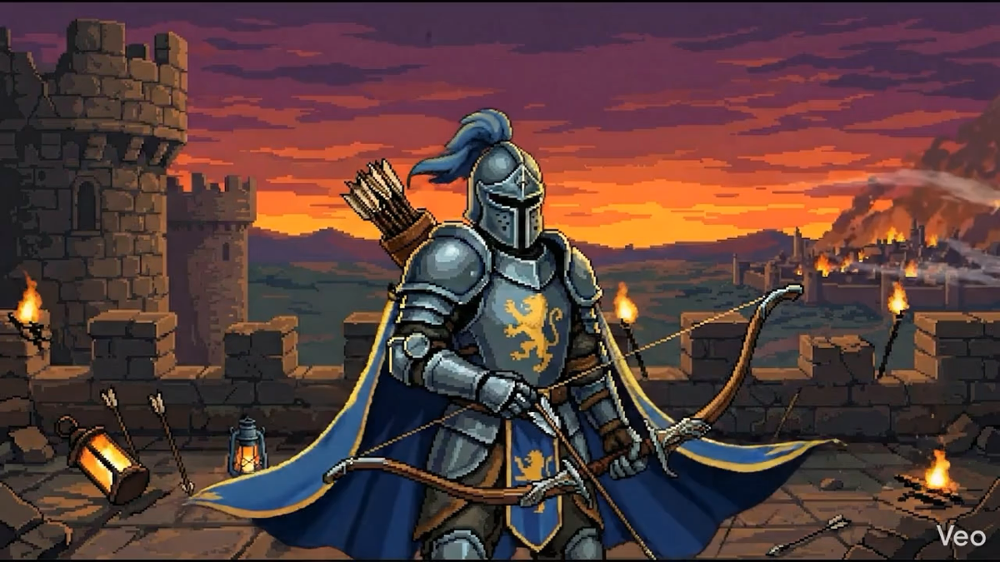
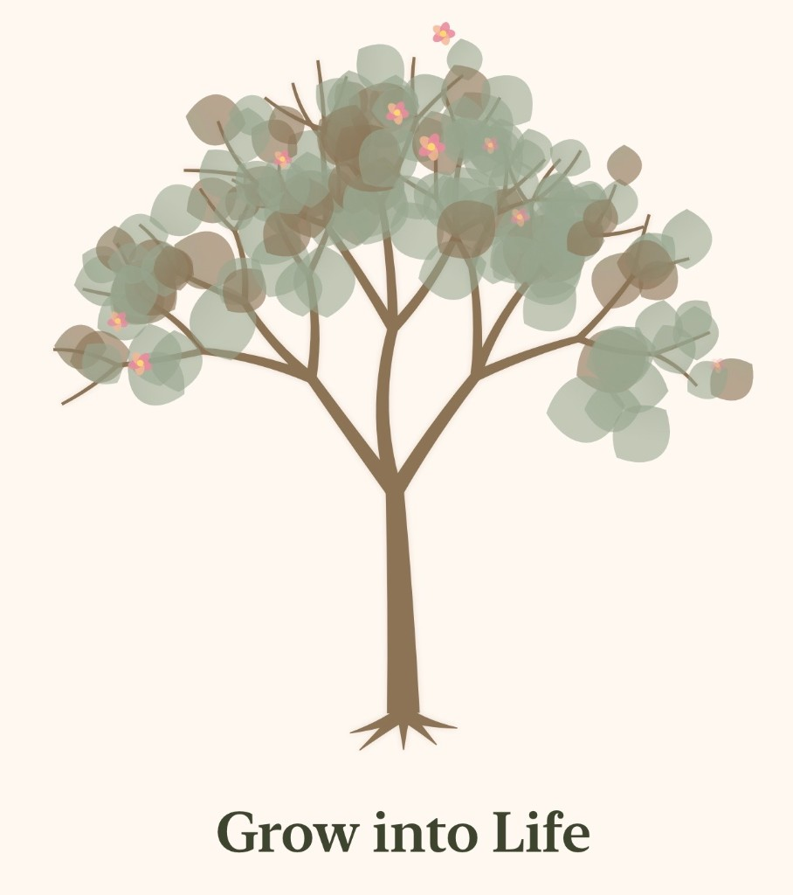

Projekt ansehenEin unabhängiges App-Studio
Chasing Dreams Interactive
Wir jagen Träumen hinterher – und gießen sie in Apps.
✦ Studio
Wir erschaffen digitale Erlebnisse, die man nicht vergisst.
Chasing Dreams Interactive ist ein unabhängiges App-Studio. Wir bauen handgemachte Apps mit Liebe zum Detail — von der ersten Skizze bis zum letzten Pixel. Nicht jede Idee ist ein Spiel. Manche sind Werkzeuge, manche Welten, manche Träume, die wir einfach verwirklichen wollen.
✦ Ausgewählte Projekte

In Entwicklung